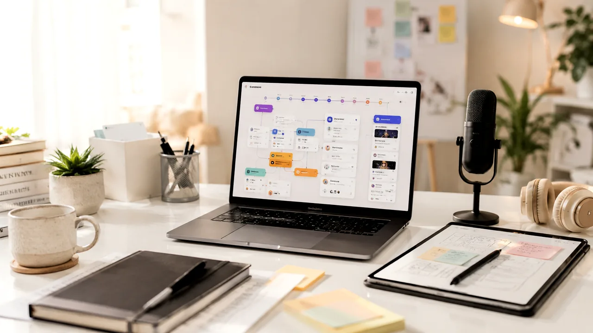

반응이 좋은 쇼츠 후킹 문장 패턴 비교

TrendFlow Guide문제형, 비교형, 저장형 후킹 문장을 비교해 어떤 주제에 더 잘 맞는지 정리합니다.
핵심 요약
조회수보다 초반 이탈이 더 큰 문제인 상황이라면, 먼저 주제별로 후킹 문장 3개를 만들고 가장 자연스러운 문장을 선택한다는 방식으로 접근하는 것이 좋습니다.
왜 지금 이 주제가 필요한가
- 정보와 선택지가 많아질수록, 사용자는 단순 추천보다 먼저 판단 기준을 원합니다.
- AI 생산성 카테고리에서는 실제 생활 문제를 먼저 정리하고, 필요한 경우에만 아이템을 연결합니다.
- 쇼츠나 블로그로 확장할 때도 Before / After, 비교표, 체크리스트형 구성이 반응을 만들기 쉽습니다.
실사용 관점 리뷰
이 주제에서 가장 중요한 것은 처음부터 완벽한 장비나 루틴을 갖추는 것이 아닙니다. 현재 반복되는 불편함을 하나만 고르고, 그 문제를 줄이는 최소 행동을 먼저 만드는 것입니다.
아이템이 필요한 경우에도 대본 템플릿, 메모앱, 화면 녹화 도구처럼 문제와 직접 연결되는 것부터 비교하는 편이 좋습니다. 목적 없이 여러 상품을 한 번에 보면 광고처럼 느껴지고 실제 실행도 늦어질 수 있습니다.
비교 분석
| 구분 | 확인할 것 | 추천 방향 |
|---|---|---|
| 문제 | 조회수보다 초반 이탈이 더 큰 문제인 상황 | 가장 먼저 해결할 불편함을 하나만 고릅니다. |
| 아이템 | 대본 템플릿, 메모앱, 화면 녹화 도구 | 여러 개를 한 번에 사기보다 1순위만 비교합니다. |
| 해결 | 주제별로 후킹 문장 3개를 만들고 가장 자연스러운 문장을 선택한다 | 실행이 쉬운 방식부터 적용합니다. |
추천 우선순위
- 현재 가장 불편한 문제와 직접 연결되는지 확인합니다.
- 매일 또는 매주 반복해서 사용할 가능성이 높은지 봅니다.
- 이미 가진 물건이나 루틴으로 먼저 해결 가능한지 확인합니다.
사지 않아도 되는 경우
내용보다 과장된 훅만 쓰면 사이트 이탈이 빨라질 수 있습니다.
쇼츠 연결 아이디어
- 문제 상황을 3초 안에 보여주는 Before 장면을 만듭니다.
- 해결 후 달라진 책상, 화면, 루틴, 아이템 조합을 After 장면으로 보여줍니다.
- 자세한 비교표와 체크리스트는 사이트 글로 연결합니다.
구매 전 비교 박스
이 글은 바로 구매를 유도하기보다, 어떤 기준으로 비교하면 좋은지 먼저 정리합니다. 실제 쿠팡파트너스 링크는 검증 후 연결하는 것을 추천합니다.